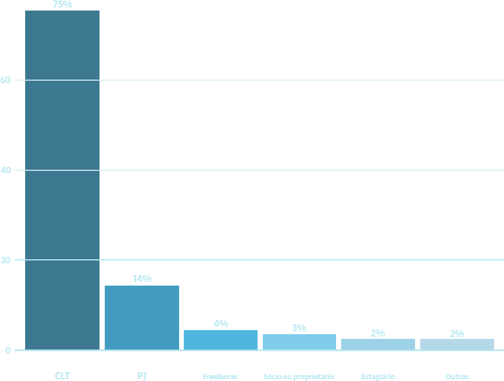

Conheça o UX e UI
O que é UX Design?
UX Design significa User Experience Design, que se traduz como o Design da Experiência do Usuário.
Sendo assim, podemos dizer que o UX Designer busca, desenvolve e executa ações sempre com foco no usuário e na otimização da experiência e satisfação do mesmo dentro das relações entre plataformas ou serviços.
Para isso os UX Designers estudam e projetam com base no comportamento do mercado e de seus clientes e, a partir disto e de constantes feedbacks, buscam otimizar a experiência do cliente.
Logo o objetivo é oferecer um serviço que garanta uma boa experiência, gerando satisfação e evitando frustrações no usuário. Projetar experiências que encantem e fidelizem clientes é o cenário mais do que ideal.
O que é UI Design
Já a sigla UI significa User Interface, podendo ser traduzida como a Interface do Usuário.
Portanto UI é área que elabora, cria e planeja o meio pelo qual o usuário interage e controla um determinado dispositivo. Essa interação e controle são feitas através de uma interface, essa interface pode ser composta por botões, menus e qualquer elemento que possibilite a interação entre o usuário e o dispositivo.
O UI é um campo criado justamente para descomplicar as formas de uso para que fiquem mais amigáveis e acessíveis para entendimento de qualquer usuário.
Em outras palavras, o User Interface é a interface e a forma como o usuário irá interagir.
Entenda a Diferença
Apesar das duas áreas comporem o processo de desenvolvimento de produtos, elas possuem algumas diferenças bem marcantes entre si.
O UX Designer é responsável pela pesquisa na hora de iniciar um projeto, fazendo uma análise competitiva, desenvolvendo personas, aplicando testes e criando um produto/serviço apropriado aos usuários.
Com o intuito de tratar como uma pessoa se sente enquanto usa qualquer produto ou serviço oferecido pela sua empresa, e como será a sensação dessa pessoa, depois deste uso.
Por outro lado, o UI Design é a área responsável por traduzir estes requerimentos em interações funcionais, intuitivas, navegáveis e esteticamente agradáveis. O trabalho vai desde definir Arquitetura da Informação até escolha de uma paleta de cores, tipografia e iconografia compatíveis ao produto/serviço. Traduzindo melhor, enquanto você visita e lê o site de alguma marca, existem ações específicas que aquela empresa deseja que você tome neste trajeto. Esta é a missão do UI Design, conduzir sutilmente os usuários pela navegação, levando-os a tomar ações de forma natural.
Mercado de Trabalho
Média Salarial
Essa é uma das poucas profissões que cresceram durante a pandemia e que já vinha em expansão alguns anos antes. E segundo uma pesquisa NN/g, a projeção é que em 2050 haja cerca de 100 milhões de profissionais atuando na área.
Mas é importante ressaltar que como estamos no início da progressão desta área, isso nos dá algumas vantagens que podem ser aproveitadas:
As oportunidades de trabalho existentes não exigem experiência, já que é uma mão de obra escassa e especializada;
A rápida necessidade que as empresas precisam de um UX Designer, faz com que os salários estejam bastante competitivos.
A média salarial de um designer UX/UI varia de acordo com alguns pontos como: tipo de contratação, nível de senioridade, região de contratação, atuação do designer, entre outros fatores. Pode se iniciar ganhando R$ 3.012,00 de salário e vir a ganhar até R$ 6.169,00. A média salarial para UX / UI Designer no Brasil é de R$ 4.532,00. A formação mais comum é de Graduação em Design Gráfico.
Forma de contratação
A maior forma de contratação dos profissionais da área ainda é CLT com 80% dos entrevistados e 13% são contratados como PJ.
que mostra uma tendência do mercado a formalizar cada vez mais a profissão, já que na pesquisa de 2019 14% eram contratados como PJ e 75% como CLT, como podemos ver nos gráficos abaixo:
Como Seguir Essa Carreira
Existem diversas formas de se formar um profissional em UX e UI design. Essa não é uma profissão que exige ter uma formação para poder trabalhar na área, mas ser graduado pode ser um diferencial.
O curso voltado ao UX e UI pode ser cursado como especialização, porém existem diversas graduações que servem como base para poder atuar na área. Para seguir a área de UX pode-se cursar: Administração; Pedagogia; Publicidade; Marketing. E para UI: Design; Design Gráfico.